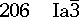
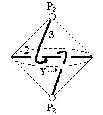

Underlying Topological Space: RP2 double suspension; Figure Pseudo-Symmetry (FPS): 2
Euclidean 3-Orbifold with Invariant-Lattice-Complex Letters
(left), Wyckoff Site Letters (right)
 
| FPS | Mult | Lattice Comp | Group Graph | Wyckoff Set | 2[4]Cover | |
| 8-2 | P2 | 30 | a, b | |||
| 16-1 | P22[Y**]P22 | 0<3>0 | (c:a-b)1 | |||
| 24-1 | [J2,V*,J2,S*]& | <2>& | (d:d-d)2 | |||
| 48 | 1 | e:cd | ||||
| 2 | 48-1 | Y**3[W2]V*2 | 2*=33<1>22 | (e1:c-d)3 | #230(g) | |
| 48-1 | J22[W2]J22 | 2*=22<1>22 | e3:d-d | [#200(g,h)] | ||
| 48-2 | P26[-]J22 | 2*=30<1>22 | e4:a-d, e5:b-d | [#200(e)] |
 205
205 207
207 Orbifold Atlas Home Page
Orbifold Atlas Home Page Crystallographic Topology Home Page
Crystallographic Topology Home Page